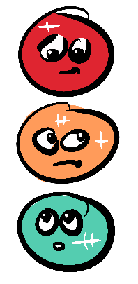
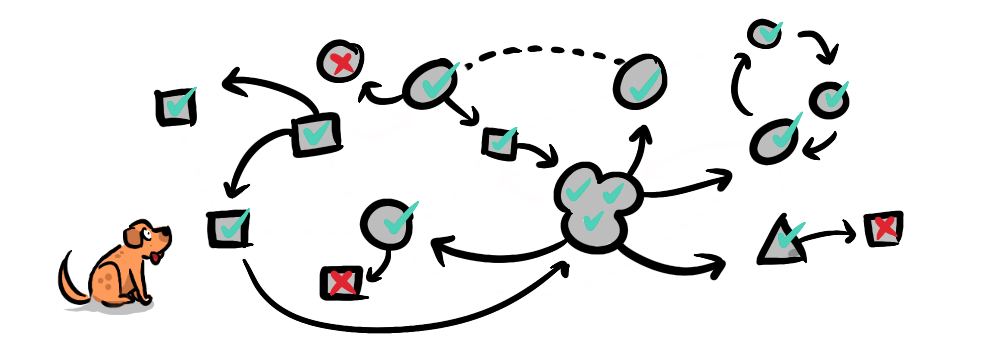
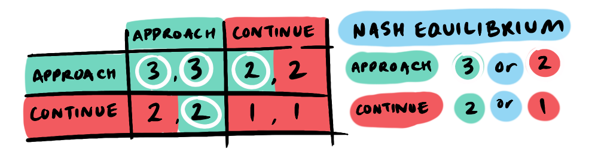
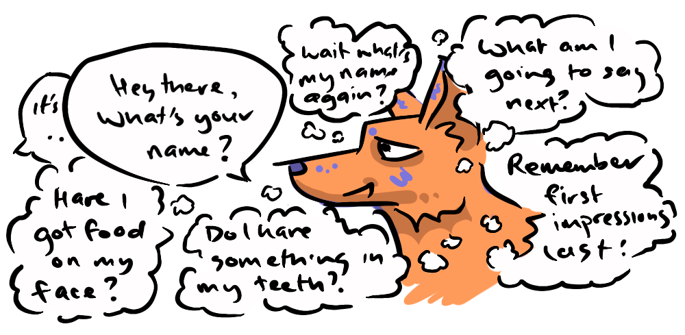

You're driving toward a busy intersection incanting "stay green, stay green, stay green"...
...alas the light capriciously switches to amber... then red.

You capitulate and halt. But why?
I'd like to argue you're following a strategy that is part of an equilibrium first identified by Game Theorist and Nobel Laureate John Nash. Yes, that guy Russell Crowe played in A Beautiful Mind.
A Nash Equilibrium is a situation in game theory where a system, comprised of rational agents, acting independently, self-balances when there is no incentive for any player to unilaterally change their strategy, given the strategies of the other players.
When we say “unilaterally,” we mean that a player’s strategy must work regardless of what the other player does. You can’t say, “If they do X, I’ll do Y; but if they do Y, I’ll do X.” That’s not a strategy—that’s a response plan, and Nash Equilibria don’t allow for that kind of conditional hedging.
Now, while the traffic light system isn't a purely self-balancing equilibrium. given it is undergirded by laws, it's important to ask the question 'Is it fear of the law that stops someone running a red?'
I would contend rather that it is the fear of screeching brakes, loud metallic impacts, the mangling of automotive bodywork, snapping of bones, rupturing of internal organs, the pain of muscle tissue rent asunder, and the howls of terror and agony that one imagines might accompany a car crash.

Correspondingly, it is the understanding that other drivers also have an interest in self-preservation that gives us the security to drive through a green light without a care in the world.

And similarly no driver has an incentive to deviate from the related strategy of driving on the designated side of the road given the identical strategy of the other drivers. I mean, if the law to drive on one side of the road was overturned, would you start driving on the other side tomorrow? Deviation from these shared strategies carries immediate risks for the individual and the collective, making it a clear negative-sum game. Whereas maintaining the strategy is positive-sum in the short term and enables the trust necessary for driving to be feasible at all in the long-term.
There are other examples of Nash Equilibria that don't involve laws, such as oligopolies that cooperate to keep prices high, or where people naturally form queues while waiting, due to social conventions. But ultimately these still adhere to coordinated "laws", whether an informal agreement or custom, that can be enforced in one way or another. The "laws" are just less clear-cut which muddies the example somewhat.
What I like about the traffic light example is that it's easy to delineate the actual self-interested motivations for each individual's behaviour from the legal motivations, and when we do so, we are also delineating the difference between a bottom-up Nash Equilibrium and a purely top-down legal authority. This helps us to not only understand what a Nash Equilibrium is but also what it is not.
To make this idea more concrete, let’s imagine two drivers at the start of their day. Each must choose a strategy that they’ll stick with:
- Follow the road rules
- Ignore the road rules
Now, consider the payoffs over the course of a whole day.
- If both follow the rules, everything flows smoothly: safe roads, no crashes — a solid payoff of 3 for each.
- If one follows the rules and the other doesn’t, the rule-follower may still be caught up in a crash. And the rule-breaker? Well, they’ve exposed themselves to a world of hurt — physically, legally, financially.
- If both ignore the rules, disaster is almost guaranteed.
We can visually express this with a simple payoff matrix:
If we compare the payoffs for the different strategies: 3 (follow rules) is better than -100 (ignore rules) and -100 (follow rules) is equal to -100 (Ignore rules). In this case, it’s clear: no one has an incentive to unilaterally deviate from the strategy: Follow the road rules. Even if you’re tempted to bend the rules, doing so endangers everyone—including yourself. The shared fear of a high-speed tangle creates a Nash Equilibrium.
This is reinforced by the fact that this isn’t enforced by police at every intersection—it’s maintained by mutual understanding and aligned self-interest.
At this point usually it's tempting to jump to game theory's poster child The Prisoner's Dilemma, but I believe there's a problem with jumping straight to framing our daily interactions and negotiations with such an adversarial scenario—one lacking in trust that is actually quite rare in real world applications. This is an issue I elaborate on later. So, for now, there are very common situations, like road rules where we follow a Nash Equilibrium, that might go unrecognised. When we look at these "no-brainer" situations it reminds us how much cooperation is a part of our daily lives.
Let's take another simple cooperative game... it turns out all this driving has taken us to our local tennis court where we're practicing, busily whacking away against the wall, next to another lone player. For the sake argument, let's assume that everyone always prefers playing together over practicing alone. So, we have a choice, we can continue as we are, or approach the other player and ask "wanna game?"
We have two strategy options: continue or approach, and that will be met with the other player's strategy, so each strategy has two potential outcomes. If our strategy is to continue and the other player also continues we get a payoff of 1 (continued practice) or we continue and the other player approaches us, resulting in a game—a payoff of 2. If, on the other hand, our strategy is to approach this will result in a game even if the other player has a continue strategy—a payoff of 2 or if the other also approaches we get an added bonus laugh and a game—a payoff of 3.
A strategy of continue either results in a payoff of 1 or 2, while an approach strategy results in a payoff of 2 or 3. So, what's the Nash Equilibrium? Clearly the approach strategy; 2 > 1 and 3 > 2. So, if a player has an approach strategy there is no rational incentive to unilaterally change that strategy, no matter what the other player does.
For those of you reading this and thinking "But, what about social anxiety? Approaching a stranger isn't so easy for some." I get you. I also find approaching strangers difficult—and this can be built into the model too, with payoffs adjusted accordingly. But I actually find thinking about the game-theoretical mutual benefits can help me get past an initial hesitation. We'll look at the issue of confidence and how it can be understood game-theoretically later on with The Toastmaster's Payoff.
Both of the examples (road rules and tennis) are not only a Nash Equilibrium but a dominant strategy equilibrium because it's the best strategy regardless of the other player's strategy, these situations happen all the time, and we generally don't notice them, because they are no-brainers. But Nash Equilibrium is not always this clear-cut, a Nash Equilibrium can be mixed, and it can also lead to non-optimal outcomes. We'll explore more complex scenarios in later episodes when we deal with the Prisoner's Dilemma, Stag Hunt and other classic scenarios.

Nash Equilibria aren’t just about clever traps or standoffs—they’re often the invisible scaffolding of everyday life. Once we notice them, we see that cooperation, coordination, and even convention are not imposed, but emerge naturally when our interests align.
But, this is also not the only way to evaluate scenarios. Next we'll be looking at Pareto Efficiency, a favourite of mine, going from a game state where a change in strategy doesn't negatively affect you, to a game state where a change in strategy doesn't negatively affect anyone.